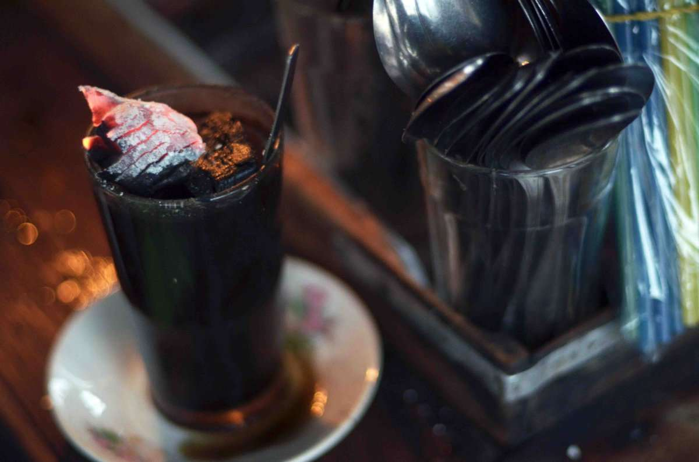

Menyajikan Kelezatan Kopi yang Menggoyang Lidah
Kopi Joss adalah jenis kopi yang terkenal dengan karakteristiknya yang unik. Proses pembuatannya melibatkan penambahan arang panas ke dalam cangkir kopi panas, memberikan sentuhan khusus pada rasanya.
Nikmati pengalaman kopi yang berbeda dengan Kopi Joss. Rasakan sensasi kopi yang begitu menggoda dan menyegarkan.